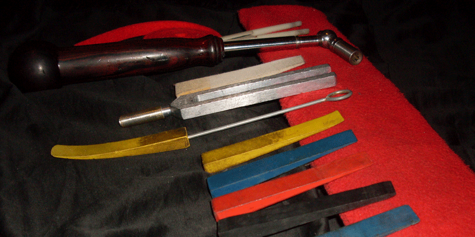

What is piano tuning?
A standard piano has 88 keys, but did you know that it actually takes over 200 strings to produce those 88 pitches? That's because some keys have two or three strings, which must be kept in perfect unison. When tuning a piano, the technician uses a tuning hammer to adjust the tension of individual strings. The tuner uses a given frequency, usually A440, to start tuning the note A. Then, when A is established, the tuner has a vast amount of choices of how to tune the rest of the piano in relation to that A. When the tuning is complete, each note will have in-tune unisons, and the musical pitch of each note will be relative to the pitches of the other notes in a prescribed manner such as Equal Temperamant. At this point, the piano will sound "in tune."
What is pitch raising?
A piano technician can also perform a "pitch raise." This is an important technique that is used when a piano is very flat. Strings tend to settle back to where they were after its last tuning. To compensate for the flattening of the pitches after tuning an out-of-tune piano, each note is brought up above the standard pitch quickly. Then the strings will stretch out and flatten a little, closer to the desired pitch. Then the piano is tuned again; this time each note will be at the standard pitch.
How frequently should I have my piano tuned?
That depends...
- If there have been extreme changes in weather conditions, especially humidity, the piano will go out of tune faster. In this case, your piano may need to be tuned every three to six months, regardless of how often it was played. (See the Piano Care Tips for advice on dealing with weather changes.)
- The more frequently the piano is used, the more often it will need tuning. If you play a lot and want it in tip-top shape all the time, you should get it tuned every three months.
- If you use your piano rarely, and it is in a climate-controlled room that doesn't fluctuate much in temperature and humidity, then it may stay in tune for nine months or more. In that case, you may need a yearly tuning.
- If the piano strings are new, or the piano has been moved recently, it will probably go out of tune because of the piano settling in.
- If you're still not sure how often your piano should be tuned, give me a call or e‑mail and I will be happy to help you figure it out.
Tuning by ear vs. tuning electronically
Piano technicians learn, through rigorous training and years of experience, to recognize the minute differences in pitch and the sounds called "beats" that an out-of-tune piano produces. Some piano technicians additionally use a handheld electronic tuning device, which picks up frequencies and displays them on a screen. While both the tuning-by-ear and electronic-tuning methods are well respected by most technicians and musicians, I tune solely by ear because I find that it simply works better for me. There is often much debate among technicians as to the merits of tuning by ear or electronically, and there seems to be no conclusion as to which one is better. Both have advantages and disadvantages. For fine tunings I use two mutes to set temperament, octaves, and unisons.
Alternate tunings and historical tunings
Most pianos are tuned to Equal Temperament, the system of intervals that is the most popular in Western music. Most piano music of all genres is written in Equal Temperament. However, Piano Care can also tune your piano to other tunings, such as the Thomas Young temperament, Well Temperament, Just Intonation, or other tunings - just give me a call or email and ask.